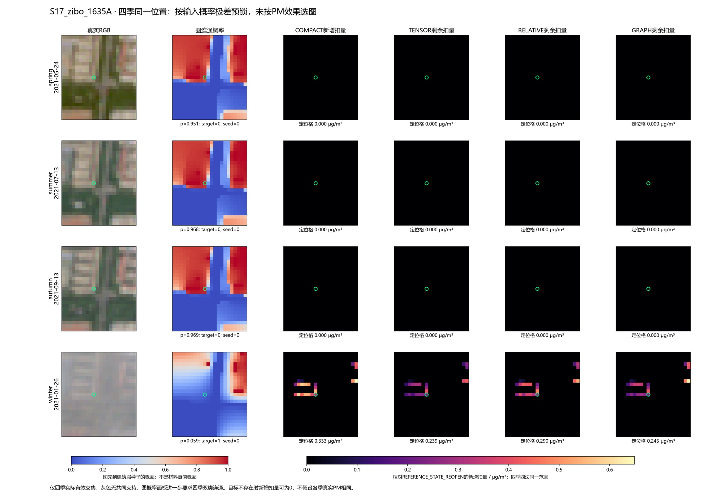
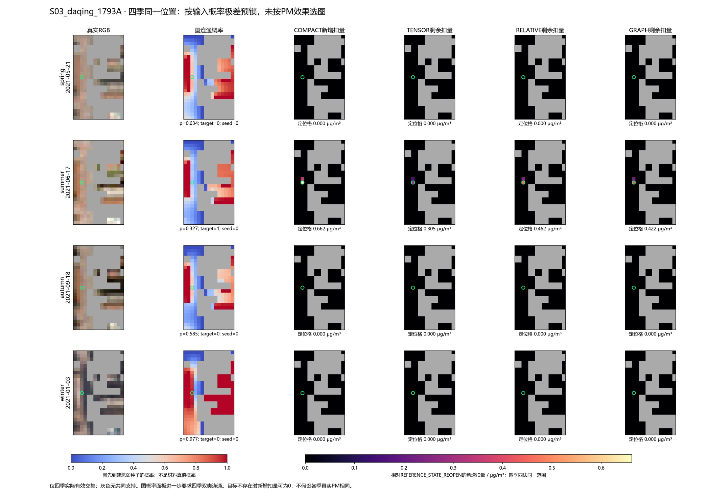
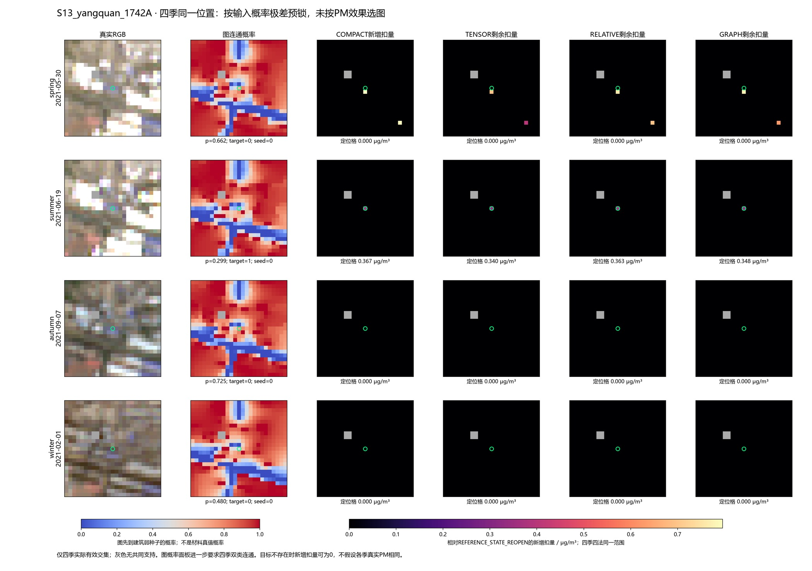

只读30地点120场：0拟合、0图重算、0PM推理。按输入概率变化选定淄博、大庆、阳泉三址，四季同位置、同有效交集；所有定位格四季都不是弱种子，且都在双类种子连通块。没有按PM效果换例。
简短结论 · 预锁选择规则 · 逐阶段总扣量 · 固定30对象四季
COMPACT只是新增补漏支，其目标跨季切换不能直接叫失效：其它季节可能已被早期方法处理，或本来不属于小亮候选。下图是新增扣量；每图下表补充RAW到各阶段的总扣量。较大总扣量也不等于较大真实误差改善。
| region | spatial_pixels | COMPACT | TENSOR | RELATIVE | GRAPH |
|---|---|---|---|---|---|
| building | 22490 | 0.001760 | 0.001125 | 0.001464 | 0.001580 |
| building_target_union | 312 | 0.126844 | 0.081092 | 0.105547 | 0.113882 |
| map_road | 25309 | 0.000866 | 0.000544 | 0.000682 | 0.000579 |
| map_road_target_union | 210 | 0.104405 | 0.065560 | 0.082248 | 0.069723 |
| unseeded_target_union | 1769 | 0.136659 | 0.082958 | 0.108759 | 0.112039 |

total_drop=本日RAW PM−阶段PM，单位μg/m³。material_direction_prominence是已有DOMAIN沿材料谱方向的形态突出量，不是普通VIS均值，也不是污染真值。
| case | raw_VIS | material_direction_prominence | compact_geometry_status | EXPAND_total_drop | REOPEN_total_drop | COMPACT_total_drop | GRAPH_total_drop |
|---|---|---|---|---|---|---|---|
| S17_zibo_1635A_2021-05-24 | 0.13700 | 0.00160 | NOT_WHITE_CANDIDATE | 0.00000 | 0.00000 | 0.00000 | 0.00000 |
| S17_zibo_1635A_2021-07-13 | 0.13333 | 0.00000 | NOT_WHITE_CANDIDATE | 0.00000 | 0.00000 | 0.00000 | 0.00000 |
| S17_zibo_1635A_2021-09-13 | 0.14127 | 0.01554 | NOT_WHITE_CANDIDATE | 0.13799 | 0.13799 | 0.13799 | 0.13799 |
| S17_zibo_1635A_2021-01-26 | 0.16100 | 0.00511 | ELIGIBLE | 0.03050 | 0.03050 | 0.36326 | 0.27520 |

total_drop=本日RAW PM−阶段PM，单位μg/m³。material_direction_prominence是已有DOMAIN沿材料谱方向的形态突出量，不是普通VIS均值，也不是污染真值。
| case | raw_VIS | material_direction_prominence | compact_geometry_status | EXPAND_total_drop | REOPEN_total_drop | COMPACT_total_drop | GRAPH_total_drop |
|---|---|---|---|---|---|---|---|
| S03_daqing_1793A_2021-05-21 | 0.14287 | 0.00000 | NOT_WHITE_CANDIDATE | 0.0 | 0.0 | 0.00000 | 0.00000 |
| S03_daqing_1793A_2021-06-17 | 0.16987 | 0.01543 | ELIGIBLE | 0.0 | 0.0 | 0.66221 | 0.42156 |
| S03_daqing_1793A_2021-09-18 | 0.12940 | 0.00000 | NOT_WHITE_CANDIDATE | 0.0 | 0.0 | 0.00000 | 0.00000 |
| S03_daqing_1793A_2021-01-03 | 0.08117 | 0.00000 | NOT_WHITE_CANDIDATE | 0.0 | 0.0 | 0.00000 | 0.00000 |

total_drop=本日RAW PM−阶段PM，单位μg/m³。material_direction_prominence是已有DOMAIN沿材料谱方向的形态突出量，不是普通VIS均值，也不是污染真值。
| case | raw_VIS | material_direction_prominence | compact_geometry_status | EXPAND_total_drop | REOPEN_total_drop | COMPACT_total_drop | GRAPH_total_drop |
|---|---|---|---|---|---|---|---|
| S13_yangquan_1742A_2021-05-30 | 0.15080 | 0.00408 | NOT_WHITE_CANDIDATE | 0.00000 | 0.00000 | 0.00000 | 0.00000 |
| S13_yangquan_1742A_2021-06-19 | 0.16313 | 0.01092 | ELIGIBLE | 0.00000 | 0.00000 | 0.36725 | 0.34804 |
| S13_yangquan_1742A_2021-09-07 | 0.09627 | 0.00000 | NOT_WHITE_CANDIDATE | 0.67985 | 0.67985 | 0.67985 | 0.67985 |
| S13_yangquan_1742A_2021-02-01 | 0.05670 | 0.00000 | NOT_WHITE_CANDIDATE | 0.00000 | 0.00000 | 0.00000 | 0.00000 |